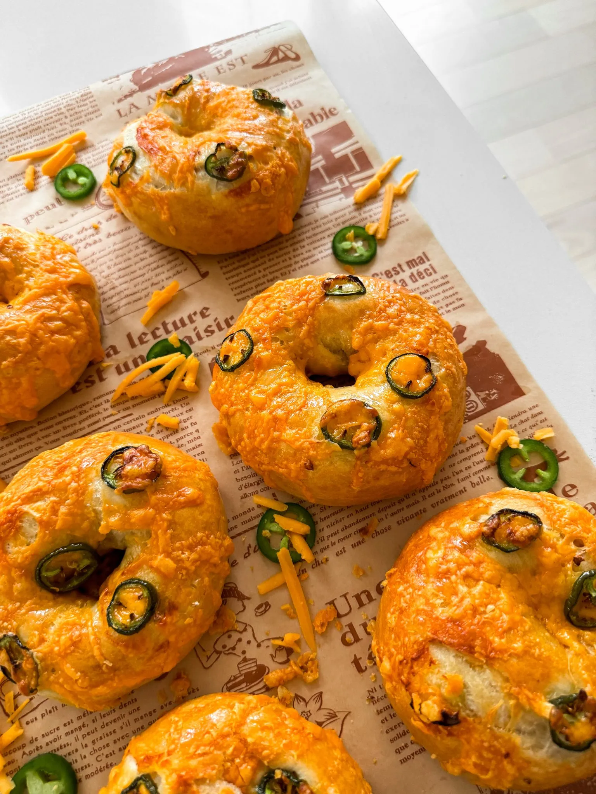

BREAKFAST
CHEDDAR JALAPENO BAGELS

Jump To Recipe
Prep Time: 2 hours
Cook Time: 1 hour
Total Time: 3 hours
Yields: 10 bagels
As a bagel connoisseur myself, when I tell you these homemade
bagels taste better than anything you can buy, I mean it!
Packed with spicy jalapenos and gooey cheddar, these bagels
are the ultimate savory treat. With a chewy texture and crispy
crust, they're perfect for breakfast or a sandwich for lunch!
CHEDDAR JALAPENO BAGELS
BREAKFEST
CHEDDAR JALAPENO BAGELS
As a bagel connoisseur myself, when I tell you these homemade
bagels taste better than anything you can buy, I mean it!
Packed with spicy jalapenos and gooey cheddar, these bagels
are the ultimate savory treat. With a chewy texture and crispy
crust, they're perfect for breakfast or a sandwich for
lunch!
Ingredients
DOUGH
- 5 cups bread flour
- 2 1/2 teaspoons salt
- 2 tablespoons honey
- 1 tablespoon active dry yeast
- 1 3/4 cup warm water, add up to 2 cups as needed
- 1 teaspoon oil, for brushing bowl
BOILING
- 8 to 10 cups of water
- 2 tablespoons malt syrup or molasses
- 1 tablespoon salt
- 1 teaspoon baking soda
OTHER
- 1 large egg
- 1 tablespoon whole milk
- 1 cup shredded cheddar cheese
- 2 jalapeños, thinly sliced
INSTRUCTIONS
DOUGH
- To a large mixing bowl, add honey, water, and yeast.
Whisk together well.
- Add bread flour and salt. Bring together with a rubber
spatula until you have a shaggy, dry-looking dough.
- Transfer to a clean surface and start stretching and
folding the dough to knead it until smooth and elastic.
You can also use a stand mixer fitted with a dough hook
attachment.
- Place the dough in a lightly oiled bowl, cover, and let
it rise in a warm place until doubled in size.
- Once doubled in size, divide the dough into 10 equal
pieces. Wrap each piece into a tight ball.
- Roll out each section into a long thick strip and wrap
in a circle and bring the two ends together to form a
bagel shape.
- Cover and let the shaped bagels proof again in a warm
place.
BOILING
- Preheat your oven to 400°F and prepare a baking sheet with
parchment paper.
- Bring water to a boil in a large pot and add malt
syrup/molasses, salt, and baking soda.
- While the water simmers, add 2 to 3 bagels at a time.
Boil for 1 minute, then flip over, and boil for 1
minute on the other side.
- Remove the boiled bagels and place them on the prepared
baking sheet.
BAKING
- Beat together the egg and milk in a small bowl to make the
egg wash.
- Brush each bagel with beaten egg wash and top with
shredded cheddar cheese and thinly sliced jalapenos.
- Bake until golden brown and crispy, about 18 to 22
minutes.
- Allow to cool slightly before serving. Enjoy!